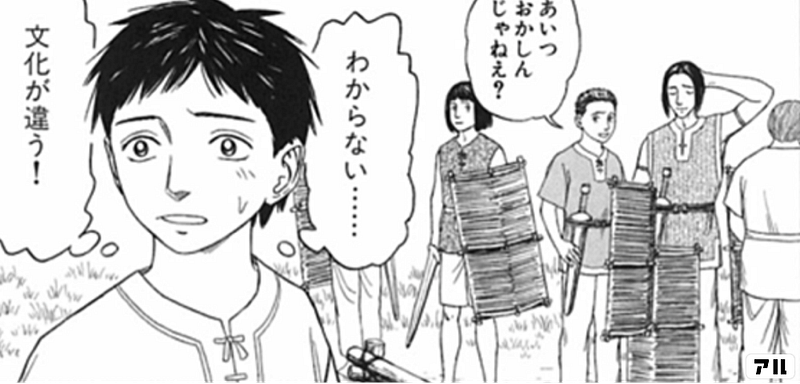
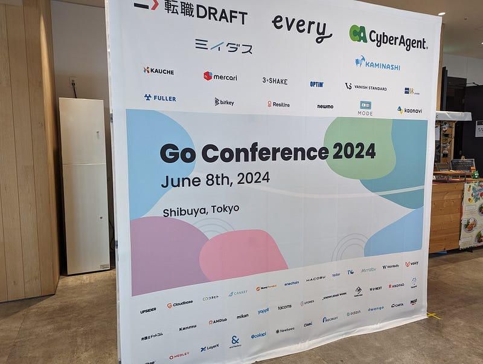

16年ぶりにイベントスタッフをやってみた
16年ぶりにイベントスタッフをやってみた
去る2024年6月8日にGo Conference 2024でいちスタッフとして参加してみました。実は私YAPC::Asia Tokyo 2008でスタッフとして参加したのを最後に、YAPC::Asia Tokyo 2009~2015、builderscon tokyo 2016~2019と主宰しかしたことがなくて、今回なんと16年ぶりに末端の構成員としてイベントスタッフをしてみたという次第です。
ここ5年くらいのこと
パンデミックもあったのでスタッフ業をする機会もあまりなかったのですが、主宰としてもいち参加者としてもコミュニティカンファレンスからはここ5年くらい完全に距離を置いてました。
実はbuilderscon tokyo 2019を開催した時に完全に心が折れてしまい、個々の人はともかくコミュニティというものにあまり近づきたくない、というかもしろ近づくと胃に穴があきそう（下のツイートの通り、実際2018年にすでにそれに近い状態になってた）で、カンファレンス業とか何があっても無理状態でした。
builderscon tokyo 2019の終わりに色々それまでやっていたこと（ブログの収集とか）が行われなかったのはそういうわけです。2019年当時は会社で泣き出したり、産業医と面談したりと個人的にはなかなか大変でした。
しかし徐々に心の風邪もよくなってきたのと、去年の夏ごろから「今度こそ会社でイベントやるぞ！！！！！」となったため、同時に「いまどきのノリややりかたにもなれないとな…」となったため、どこかスタッフとしてやれるところあるかなーと思っていました。
思えば日本に2004年に帰国してから一度も長期（2週間以上）の夏休みを取ったことはありませんでした。ということで今週をもってメルカリ最終出社とし、来週より夏休み開始となります。lestrrat.medium.com
そして「まぁアウェイじゃないけど、中の人でもないし、いいサイズだし、会社もスポンサーしてるし…」ということでGo Conferenceのスタッフに申し込んだのでした。
「文化が違う！」
スタッフ業をしてみて、期待通りというか、まぁあたりまえだよね、と思ったのは「あ～進め方が全然違うなー」ということでした。

自分が主催のときだったらそろそろこれが起こるだろう… と思ってることが起こらなかったり、逆に「あ、そんなこともするんだ」ってことがあったりでなかなか新鮮でした。
具体的に何をどうするって話はコミュニティの方向性とかで決めていけばいい話なので、どっちが良い悪いの話ではないです。なので特に書きません。
おもに当日起こったことで気になったな、ってところだけはKPT共有させてもらいました。別にそれをくみ取ってもらう・もらわないはどっちでもよくて、そういう意見もあるよ、を知っててそうするのと知らないでやっちゃうのは違うのでそこだけお知らせした感じです。みんな自分のやりかたを模索してけばいいんだし、そもそも自分はぽっと出のスタッフですしね。
やったこと
会期前にやったことと言えばメインサインのバックパネルの発注ですね。デザインは他の方がやってくれました。
なお、今回は発注前の最後のデザイン確認の返事を僕が出し忘れて当日に届かないところでした。皆様すみませんアンド、自分よく業者相手に粘った。特急お値段でなんとか事なきを得ました。

あの、ついでに自慢させてほしいんですけど、多分2009年くらいに当時の日本のWeb技術系カンファレンスでこのバックパネルを登壇者の後ろに置く、をやったの僕が最初だと思います（違ってたらごめんなさい — ご指摘をお待ちしております）。
当時スポンサーを集めるのにすごい苦労してて、「どうやったらスポンサーがこのイベントにお金を出してもいいと思ってくれるんだ！！！」と悩んで出した施策のひとつだったんですよね。当時宣材がなくて困ってたのもあって、カメラマンを雇うことにしたのとセットで考えた記憶があります。写真撮ったら必ずスポンサーの名前が出る！っていいやん？最近はわりとどこでも当たり前になってよかったね。
カンファレンス当日は主に入場者のチェックイン捌きマンと写真撮る時の声がけマンさせていただきました。あとはちょこまかと色々。
スタッフ業を終えて
久しぶりのスタッフ業でしたが、かなり楽しめました（あ、あと個人的には何も判断しないで体を動かしてればいい！は超絶！楽！でした！！！！）。懇親会いけなかったのは残念。
スポンサーブースに人がちゃんと行っていてすごかったですね。トークはごめんなさい、全く見てないです。その間に3Dプリンタの話ばっかりしてました。
私はカンファレンス企画や運営に思い入れが強いため、もしコアスタッフとかに入っちゃうと自分の思想を強く出してしまうのでそういうところに入るつもりはないのですが、またお手伝いさせてもらってもいいな、と思える良いコミュニティでした。
来年もあるみたいだしみんなもスタッフ業するといいと思いますよ！